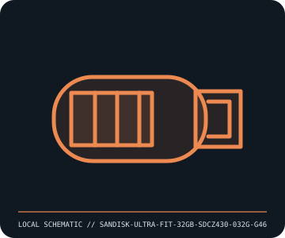

[ REMOVABLE MEDIA // MODEL-SPECIFIC RECORD ]
SanDisk Ultra Fit 32 GB USB Flash Drive (SDCZ430-032G-G46)
SanDisk Ultra Fit compact USB 3.2 Gen 1 (USB 3.1 Gen 1) flash drive. This catalog entry distinguishes the removable medium from its drive/reader and calls out model-specific fit and format caveats.

IDENTIFICATION: Transcribe the entire model/part number, capacity, generation and revision from the label or packaging. Confirm the exact host-device manual before inserting or writing.
Format, capacity and compatibility
| Product / part ID | SanDisk Ultra Fit 32 GB USB Flash Drive (SDCZ430-032G-G46) |
|---|---|
| Generation / format | SanDisk Ultra Fit compact USB 3.2 Gen 1 (USB 3.1 Gen 1) flash drive |
| Capacity and medium | SanDisk SKU SDCZ430-032G-G46, 32 GB USB-A flash drive; product family advertised read up to 130 MB/s. Manufacturer does not promise identical sustained writes across all capacities/hosts. |
| Compatibility | USB 3.2 Gen 1/USB 3.1 Gen 1 interface with backward-compatible USB 2.0 operation at the host’s lower rate. Device must provide a Type-A port or proper data adapter; operating system and filesystem affect usable capacity. |
| Version and model caveat | SDCZ430-032G-G46 is distinct from other Ultra Fit capacities and regional suffixes. Small plug-and-stay form can heat in constrained ports; manufacturer speed is a best-case read rating, not measured write rate. |
Handling and preservation
Avoid leaving it exposed to accidental impact or heat, and remove safely before unplugging during writes. Keep a physical tag/inventory record because the very small shell is easy to lose. Verify full capacity and maintain separate checksummed copies.
- Preserve original packaging, label, acquisition notes and any write-protect state; photograph the media before use.
- Make at least two independent copies of valuable data, verify checksums, and periodically test a restore. A removable cartridge or card alone is not an archival strategy.
Model and version notes
SDCZ430-032G-G46 is distinct from other Ultra Fit capacities and regional suffixes. Small plug-and-stay form can heat in constrained ports; manufacturer speed is a best-case read rating, not measured write rate.
Standards and product-family sources establish the generation; exact model manuals, labels, regional revisions, firmware, interface and host support determine actual interchangeability.
Sources and standards
- SanDisk — Ultra Fit 32 GB (SDCZ430-032G-G46)Manufacturer SKU-level product page with USB generation and advertised performance.
- USB Implementers Forum — USB specificationsUSB-IF terminology and interface-generation specifications.
Manufacturer and standards references are preferred; archival manuals or museum records are identified when products are discontinued. Capacity and compatibility claims are scoped to the specific SKU and generation named above.